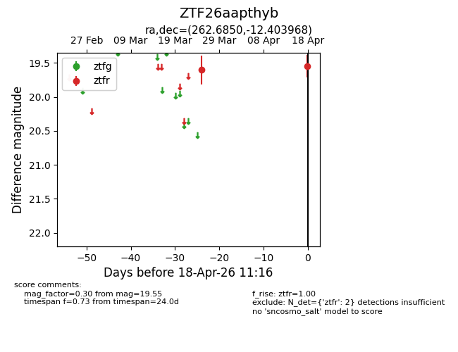
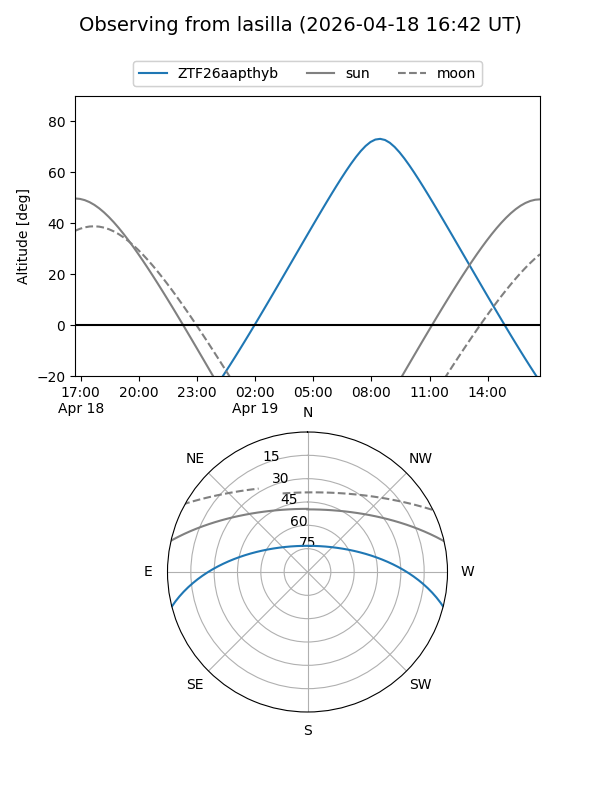
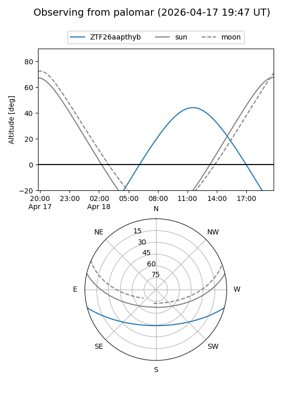

ZTF26aapthyb
Target ZTF26aapthyb at 2026-04-18 11:22
Aliases and brokers:
FINK: link
Lasair: link
ALeRCE: link
alt names
ZTF26aapthyb (ztf,fink_ztf)
Coordinates:
equatorial (ra, dec) = 262.6850,-12.40397
equatorial (HMS+DMS) = 17:30:44.40,-12:24:14.28
galactic (l, b) = (12.3219,+11.64388)
Flags:
Photometry:
last ztfr=19.55
2 ztfr detections
Lightcurve

Visibility


Additional plots